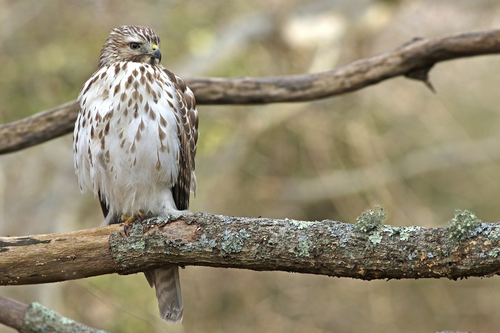

In adults, the head is brownish, the chest reddish. The belly is pale with red stripes. The
tail, which is quite similar in length to other members of the genus Buteo, is adorned with fine
white bars. The red shoulders that give the species its name are most noticeable when the bird is
perched. The red-shouldered hawk has dark upperparts that are embellished with small spots
white. Lores and cheeks are greyish, slightly tinged with cinnamon. The chin and the top of the
throat vary from white to dull gray. The irises are brown. The orbital ring, the wax and the inside of the mouth
display different shades of yellow, which contrasts with the blue-horn of the beak whose base is black. The
legs and feet are yellowish.
The female has a plumage identical to that of the male, but its size is much more imposing. Juveniles
resemble adults, however the white and reddish edges of the feathers of the upperparts are more
reduced, giving this area a more uniformly dark appearance. The edge of the wings is less
Dark blond. The underside is buff with numerous chestnut or black spots. The tail has gray bars
more numerous. The tarsi are variable, from pale greenish-yellow to white.
Size: 47cm
Wingspan: 90 to 114 cm
Weight: 500 to 700 g
Longevity: 20 years
Order: Accipitriformes
Family: Accipitridae
Genre: Buteo
Species: lineatus
In this species, no less than 7 calls have been recorded. The most common call is given to mark the
territory or when adults want to raise the alarm. It is a series of clear and
evenly spaced: "kee-ah" or "kah".